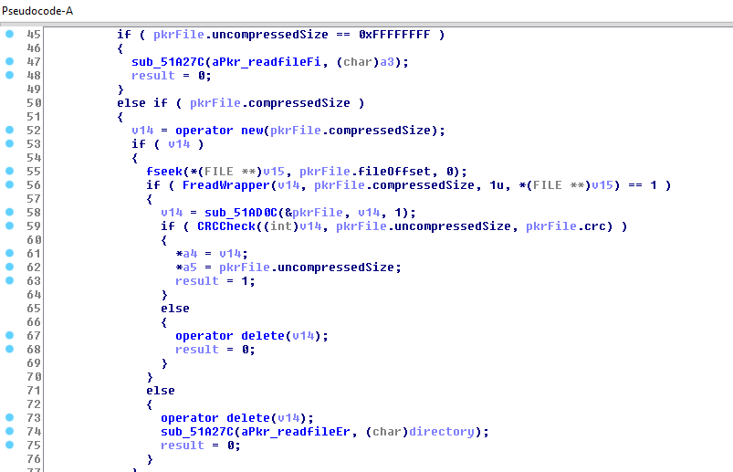

Spiderman 2000 - Writing the file loader
Motivation to do it
Right after the first version of the PKR extractor I was thrilled and wanted to explore more of the game's files. Unfortunately I was only able to extract the files, repacking them is another story. Although kamiloxnumetal already had released tools able to unpack and repack PKR, having to do it every single time I modified a file is insane.
Finding the responsible function
While reversing it was clear that the game setups internally all the information of the PKRDirs and PKRFiles, after that the PKR file is simply used to load the files. This made things easier since there was only one function that I needed to focus.

Here's the function I was talking about, it starts at 0x00519194. This is the relevant part where all the magic happens, if you're curious of what happens before what is shown in the picture it goes to a specific PKRDir and searches if there's an entry of the specified file name. If there is then it performs some sanity checks and then proceeds to get the file. Here's the order of things:
- Allocates a buffer with the size of the compressed file (
compressedSizeis equal touncompressedSizein non-compressed files) - Fseeks to the offset and reads the file to the buffer.
- Calls
sub_51AD0Caka the decompression routine. If the file uncompressed it simply returns the buffer, if not it uncompresses the file, deletes the old buffer and returns the new one. - Perfoms the CRC check
As you can see the only if the CRCCheck succeeds the a4 and a5 parameters are set and that is the only case the function returns 1(true). Awesome! a4 and a5 are definitely "out" parameters that store the buffer of the file and the size, respectively.
Writing the loader
Getting the code to run
My first idea was to write a program that started spidey.exe with the SUSPENDED flag and then I'd inject the loader. Unfortunately this isn't so easy as it seems because when you start a process with the SUSPENDED flag the needed structures for DLL loading are not setup yet. There are some tricky ways to do so and I even thought in trying to suspend the process right after it started but it still wasn't the best way.
That was when I thought in proxying a game's DLL, the one I chose was binkw32.dll(It is used to load and play the game's cutscenes, the bik files). Although this process is mostly used to detour the calls to a certain DLL, here I used it to install my loader before the game reaches its entry-point (running my code before the game starts).
Using a tools such as ExportToC++ it's a really easy process. It basically redirects all the calls to binkw32 to the original one, so one less thing to worry about.
Writing the loader
Here's the interesting part from my loader.
//Disable buffer allocation of pkr extracted file
if (!NopMemory(0x000519375, 0x005193A1 - 0x000519375))
return FALSE;
//Disable fread of the file and the error
if (!NopMemory(0x005193C5, 0x005193CA - 0x005193C5))
return FALSE;
if (!SetMemory(0x005193D0, &twoByteJmp, 1))
return FALSE;
if (!NopMemory(0x005193D2, 0x005193FD - 0x005193D2))
return FALSE;
DWORD jmpOffset = (DWORD)&LoadFile - 0x0051940C;
//Hook file loader function
if (!SetMemory(0x00519408, &jmpOffset, 4))
return FALSE;
//Disable CRC checks
if (!NopMemory(0x0051942D, 0x00519445 - 0x0051942D))
return FALSE;
if (!NopMemory(0x0051941E, 0x00519423 - 0x0051941E))
return FALSE;
if (!SetMemory(0x0051AD70, &retOp, 1))
return FALSE;
Before actually starting to modifiy the game I decided to write two functions that would help me with the process of patching.
NopMemory as the name indicates it NOPs(0x90) memory. The first parameter is the starting address and the second is the amount of bytes to patch.
SetMemory receives as the first parameter an address to be written to. The second is the buffer that will be written and the third is the size of the buffer.
The comments I left are not 100% accurate since I wrote them at the start and forgot to update them. So here's how they really work.
- The first
NopMemoryis correct and it's used to remove the buffer allocation(new (pkrFile.compressedSize)) because if I didn't do so it would cause a memory leak. - The second one is used to disable the fread wrapper, because we're going to read the files from the disk.
- Then we have a
SetMemory. Since I disabled the FreadWrapper it won't return anything. This means that the value that is in EAX will be the one to be checked if is 1. Unfortunately EAX holds the compressed file size which is never 1, thus requiring modifying the jump. - The following
SetMemorychanges the call to the decompression routine to my LoadFile. - The next
NopMemorys are used to disable the CRC checks and the delete call. - Lastly,
SetMemorywas used to disable a internal CRC check that was causing some problems.
The actual file loading
File name setup
The snippet is from here.
__declspec(naked) PVOID LoadFile(PkrFile *pkrFile, PVOID loadBuf, DWORD one) {
__asm {
//get the directory
mov eax, [esp + 0xA4]
mov originalDirectory, eax
//Setups the path
push originalDirectory
push filePathAdd
call mystrcpy
add esp, 8
push 0x20
push [esp+8]
push eax //Its in eax from strcpy
call strncat
add esp, 0xC
push [esp+4]
call LoadStub
add esp,4
ret
}
}
As I said in the beginning, the function can only load a file by knowing its name and the directory it is inside. This means that using some math I can access the other function's stackframe and retrieve this information. After concatenating the directory with the file name it's ready to be loaded.
Snippet from here.
PVOID *LoadStub(PkrFile *pkrFile) {
HANDLE hFile = CreateFile(filePath, GENERIC_READ, 0, NULL, OPEN_EXISTING, FILE_ATTRIBUTE_NORMAL,
NULL);
if (hFile == INVALID_HANDLE_VALUE) {
MessageBoxA(NULL, "Error opening the file", "dammit", 0);
return NULL;
}
DWORD fileSize = GetFileSize(hFile, NULL);
if (fileSize == INVALID_FILE_SIZE) {
CloseHandle(hFile);
MessageBoxA(NULL, "Error getting size", "dammit", 0);
return NULL;
}
pkrFile->uncompressedSize = fileSize;
UCHAR *buffer = malloc(fileSize);
if (!buffer) {
CloseHandle(hFile);
MessageBoxA(NULL, "Error creating buffer", "dammit", 0);
return NULL;
}
DWORD bytesRead = 0;
if (!ReadFile(hFile, buffer, fileSize, &bytesRead, NULL)) {
free(buffer);
CloseHandle(hFile);
MessageBoxA(NULL, "Error reading the file", "dammit", 0);
return NULL;
}
if (bytesRead != fileSize) {
free(buffer);
CloseHandle(hFile);
MessageBoxA(NULL, "Not all bytes were read", "dammit", 0);
return NULL;
}
CloseHandle(hFile);
printf("Loaded %s\n", filePath);
return buffer;
}
Nothing special about this one, it's a regular file loading routine. Until my latest version it would crash if you modified a file with a bigger one, that was caused due to not modifying the uncompressedSize. After adding the pkrFile->uncompressedSize = fileSize; line it still didn't work, due to my PKRFile structure being incorrect. Thankfully I was able to fix this easily with the aid of x64dbg.
That's all folks!
After a lot of blood, sweat and tears I got the custom file loader!